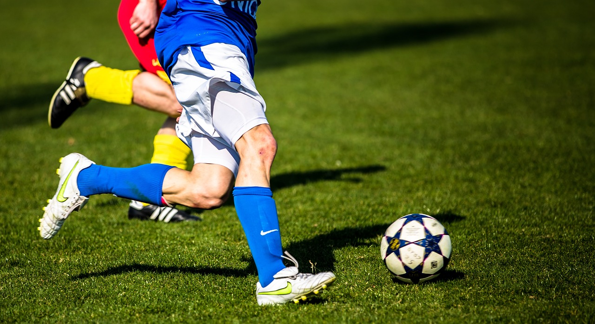
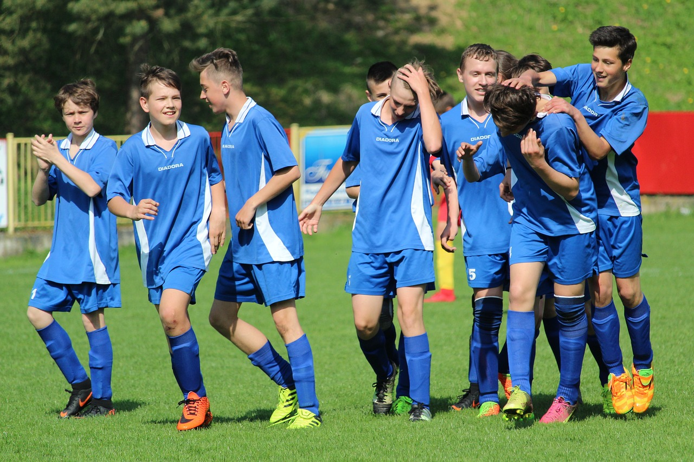

Sobre nosotros
Pablo Pérez, “El Tano” para los amigos, fue un loco por el fútbol. En 1998 puso en marcha el plan para cumplir un sueño compartido entre amigos que deseaban un lugar donde patear la pelota los fines de semana. A lo largo de los años, ese sueño creció y se convirtió en el gran complejo que ves hoy.
Desde que abrimos, nos convertimos en el punto de encuentro de jugadores, amigos y familias unidas por el amor al deporte. Punto Penal es un lugar donde todos son bienvenidos, donde viven la emoción del fútbol, compañerismo y la diversión.
Nuestro predio
Canchas de fútbol 5
Cancha de fútbol 7
Cancha de fútbol 11
Contamos con 5 canchas de futbol de pasto semiartificial, 2 canchas de futbol 5 cuentan con techo para cubrir de la lluvia y la cancha de futbol 11 cuenta con tribuna local y visitante. Todas tienen luces para jugar de noche (se cobran recargo por uso de las mismas).
Punto Penal, tu punto de encuentro!
Si estás buscando un lugar donde el fútbol cobra vida con pasión y en comunidad, te damos la bienvenida a Punto Penal. Acá, cada sonrisa, cada aplauso y cada gol resonarán a través de los años, recordándonos por qué el deporte es mucho más que un juego. ¡Te esperamos con los brazos abiertos y la pelota en movimiento!